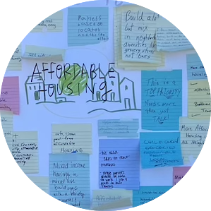
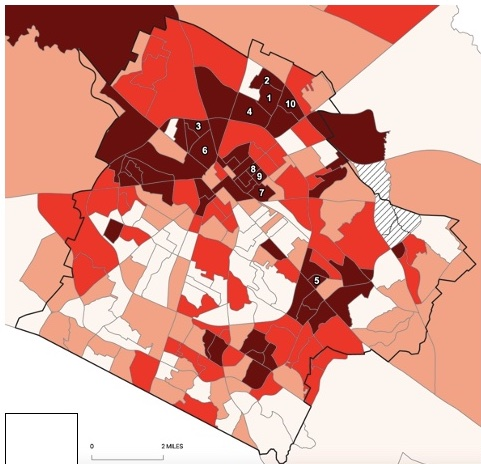
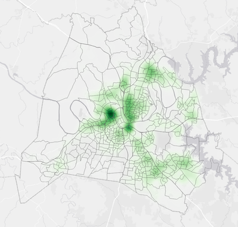

{kind=link}
INTRODUCTIONS
Hi there, I'm Emily Barrett. I am a geographer, community-engaged researcher, and housing justice advocate. I'm currently pursuing my PhD at Vanderbilt University.
I'm interested in how public goods, like affordable housing, are secured and equitably distributed via municipal budgeting. I know budgets seem boring, but municipal budgets also shape the foundation of our cities, and their politics. I'm especially interested in how social
movements view municipal budgeting as a site for transformative social change in the U.S. South.
Contact me: emily.barrett@vanderbilt.edu | Github: ebarre01
PUBLICATIONS
ARTICLES
Barrett,Emily, and Sara Safransky. 2024. “Reimagining the municipal economy: The emancipatory politics of the people's budget movement”. Urban Studies. [access here]
Barrett,Emily, and Sara Safransky. 2023. “Towards people’s budgets: Public economic geography for movement building”. Professional Geographer. [access here]
Barrett,Emily. 2023. “Unseeing racism: Naming whiteness at the intersections of regimes of data and participation”. Planning Theory & Practice. [access here]
Barrett,Emily, and Amber J. Bosse. 2021. “Community geography for precarious researchers: Examining the intricacies of mutually beneficial and co-produced knowledge”. GeoJournal. [access here]
Barrett,Emily, and Matthew W. Wilson. 2019. “Mapshop: Learning to map, mapping to learn.” Living Maps Review. [access here]
SELECT PAPER PRESENTATIONS
2023 | “Contesting urban financialization: Organizing for community benefits and the rights of displaced tenants in Nashville, TN”. Urban Affairs.
2023 | “Critical Budget Studies: Understanding People’s Budgets through care and abolition.” Accounting for Space mini conference.
2023 | “Code enforcement as policing”. American Association of Geographers Annual Meeting.
WORKSHOPS
2023 | Introduction to QGIS
ONGOING RESEARCH
PUBLIC GOODS
My dissertation project explores the shifting racial politics of public goods in U.S. cities through an archival, geospatial, and ethnographic study of municipal budgeting in Nashville, Tennessee. Inspired by nationwide calls for people's budgets, I analyze how municipal budgets create and distribute public goods, like affordable housing, to discern how public goods sustain or repair racial and spatial inequities in the 21st century. DATA AND PARTICIPATION
I have longstanding interests in urban planning, especially how data-driven and participatory processes are used to make and justify contentious urban planning decisions. My research shows that our expectations for what data and participation do for urban planning has important implications for how we understand and solve urban problems, and their inequities.
CODE ENFORCEMENT
Do building codes protect neighborhood residents? Are they a weapon of gentrification? Do they help renters hold negligent landlords accountable? I've been transfixed by the role of code enforcement since I began working as a neighborhood planner in 2016. I've been inspired by work in critical property theory to understand how code enforcement structures relations of precarity and power in the home.
WEB MAPPING PORTFOLIO
{kind=link}
Evictions & public housing, Nashville, TN
Explore the relationships between public housing and evictions. This research project was part
of a report presented to Metro
Nashville's Affordable Housing Committee.
Made with JavaScript and Leaflet

Gentrification and affordable housing, Lexington, KY
Examine several indicators of affordable housing, gentrification and urban change. This map was one output from a university-community collaboration.
Made using CARTO

Code enforcement: A weapon of gentrification?
Explore patterns of code enforcement violations in Lexington, KY. The anonymity of reporters was a central concern for residents, so this map examines who reports housing violations.
Made with JavaScript and Leaflet